8-28-2012
Etched Glass Salad Dressing Bottle

My husband I and go through a lot of salad. I mean enough to buy the Costco sized packs of lettuce, cheese, and croutons. I was thinking about how neat it would be if I could learn to make my own salad dressing, which will be the focus in my next recipe post. In the mean time, I decided what I really needed an easy pour container to hold my homemade salad dressing. As luck would have it I just used the last of my Oil Olive which was held in a bottle with a fancy pour spout. So, in true upcycle fashion, I decided to spice up the bottle and give it a new life as my "salad dressing bottle". Enjoy, Be Inspired, and Create some Upcycled Beauty for yourself!

What You Will Need:
- Old Olive Oil Bottle -OR - Any Bottle with a Pour Spout
- Contact Paper
- Letter Stickers
- Exacto Knife
- Armour Etch -OR- Glass Etching Cream
- Paint Brush
- Protective Gloves
Directions:
Remove any labeling and stickiness from your bottle. Once your bottle is clean and dry apply the contact paper to the side you will be etching. Be sure to press out any bubbles in the contact paper as best as you can so you don't get any leaks in the etch.
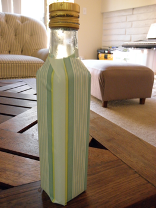Next apply the stickers to the contact paper. I choose to spell salad, but you could use any word you'd like.
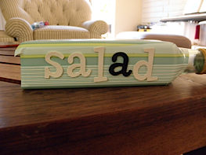Use your exacto knife to trace around the edges of the letters, essentially cutting the letters out of the contact paper. Once you've traced around the sticker you can remove it and use your exacto knife to lift the cut out letters.

Now it's time to use the Armour Etch. Note: Please follow all the safety precautions and directions on the Armour Etch or any glass etching cream you use. Following the directions on the armour etch, put on safety gloves and use the paint brush to apply a liberal amount of etching cream, covering the letters. Rinse off the paint brush and allow the cream to set for 60 seconds. Immediately rinse the entire bottle off in the sink. Wipe the bottle dry and remove the contact paper.
 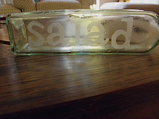
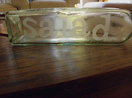
Bringing new life to old and would-be discarded items always makes my day just a little bit brighter! Enjoy your new bottle, and get geared up for my first ever salad dressing recipe!
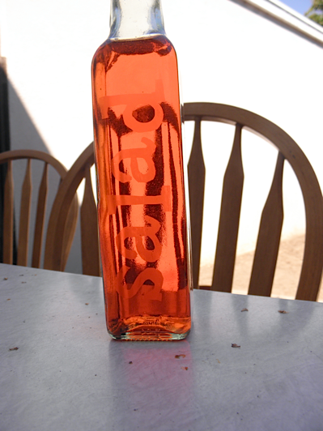Click Here for more great craft ideas!
8-26-2012
Authentic Southern French Crepe

Bojour! About a month ago our family hosted a young man named Jules from Nantes, France. In his home town he lived above a creperie and as a thank you he cooked and shared with us this recipe for French Crepes. This recipe is definitely an indulgence, but even the healthiest of us need those every now and then. Whether you prefer to add sweet fillings, my favorite being fresh strawberries and whipped cream, or savory fillings, such as smoked salmon and feta cheese, this is a delicious recipe for Sunday Brunch or any day of the week. Bon Appetit!
Note: This recipe makes roughly 10 - 12 crepes.
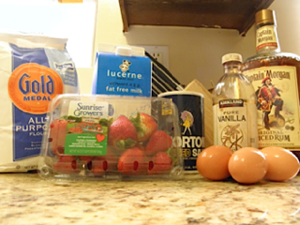
Ingredients:
- 1 1/4 cup Flour
- 3 Eggs
- 2 cups Milk
- Pinch of Salt
- 1 capful of Vanilla Extract
- Butter (for rubbing on skillet)
- Optional: 1 capful of Rum
Supplies:
- Medium Bowl
- Dry Measuring Cups
- Liquid Measuring Cup
- Whisk
- Plastic Wrap
- Skillet
- Spatula
Directions:
- Measure out the flour and place into a medium bowl. Use your hands to make a large crater in the center of the flour. 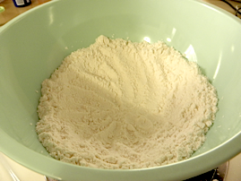
- Crack the 3 eggs into the center of the flour crater. Next, add only a little bit of milk to the eggs in the center of the flour crater.
- Using your whisk pop the egg yolks. Start by mixing just the center contents of the crater. As that starts to thicken, add a little more milk and flour from the sides of the crater and continue to whisk. Continue adding milk and taking flour from the sides of the crater until all of the milk and flour is throughly whisked in. Be forewarned that this will be a whisking frenzy!
- Once you've finished whisking the flour/egg/milk mixture add a pinch of salt, capful of vanilla, and, if you choose, capful of rum. Whisk to fully combine these ingredients.
- Cover your crepe batter with plastic wrap and stick in the fridge for a minimum of 30 minutes. This batter could be mixed the night before and stored in the fridge overnight.
- To cook your crepes, set your burner on a medium to medium-low temperature. Very lightly butter the skillet. Pour about a half a cup of batter into your skillet and swirl the skillet to get a thin even coat. Note: the first crepe always turns out badly.
- The edges of the crepe will start to lift slightly from the pan, at this point you should flip your crepe. You only need to briefly cook the second side of the crepe. Remove crepe from skillet and keep warm as you continue to make the rest of the crepes.


 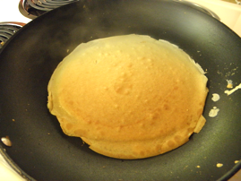
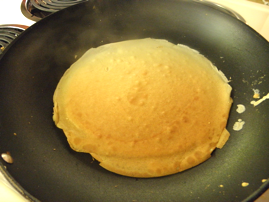
Enjoy your crepes with an assortment of delicious fillings. We choose to have a very indulgent brunch and had strawberries, whipped cream, nutella, chocolate sauce, and maple syrup.

I hope that you enjoy this recipe as much as my family does! Like me on FaceBook and tell me what your favorite fillings and toppings are! 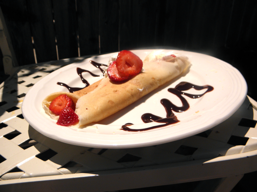
Click here for more great recipes!
8-23-2012
Change Your Purse from Drab to Fab
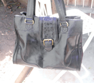When my husband and I helped a friend of ours move, she offered us some of the things she no longer wanted. Included in those things was this hideous, but huge, green purse. I thought - yeah, it's ugly, but I don't really have a purse that's big enough to carry my laptop and everything else. So I took the purse and decided that if I was ever going to use it I had to make some improvements. The result - a gorgeous, classic black purse with added texture. Here's how I did it!
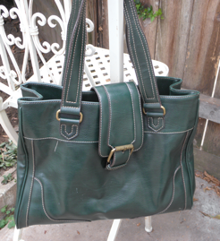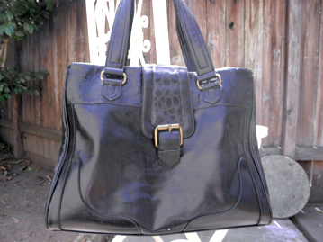Supplies:
- Old or Ugly Purse
- Acrylic Paint
- Paint Brush
- Elmer's Glue
- Damp Cloth
- Cup of Warm Soapy Water
- Q-Tips

Directions:
Take the damp cloth and wipe down the purse to clean off any dirt or dust. Using your acrylic paint and your paint brush, paint all the surfaces of the purse you do not want to add texture to. Take extra care when painting around cloth or hardware. If you get paint on the cloth or hardware take q-tip, dip it in the warm soapy water, and use the wet q-tip to rub off the unwanted paint.

Once the paint has dried to the touch, about 1 hour, use the Elmer's glue apply a small bead onto the unpainted sections of the bag in a pattern. Once you've finished you're pattern allow glue to fully dry, 2 - 3 hours. Once the glue has fully dried, paint the textured section of the purse with acrylic paint. Allow the paint to fully dry and set, about 48 hrs. You can now use your purse! Once the paint has fully set it becomes partially water resistant and you can use a wet cloth to clean your purse as needed.


Enjoy your new purse and don't forget to check out other upcycled crafts. Happy Crafting!